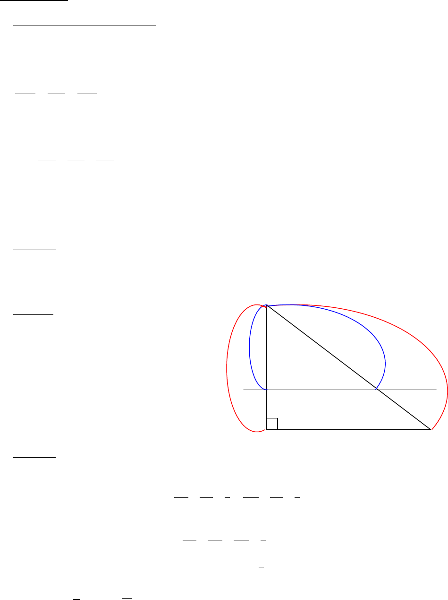

3/4
3) Applications
a) Agrandissements et réductions :
Dans les conditions d’utilisation du théorème de Thalès, les angles des figures sont conservés
et les longueurs des figures sont proportionnelles :
montre que les dimensions du triangle AMN sont proportionnelles à
celles du triangle ABC.
Si k est le coefficient de proportionnalité du triangle ABC vers le triangle AMN,
alors
AM
AB
=
AN
AC
=
MN
BC
= k.
Donc AM = k
AB, AN = k
AC et MN = k
BC.
Si k < 1, on dit que la figure obtenue AMN, est une réduction de la figure initiale ABC.
Si k > 1, on dit que la figure obtenue AMN, est un agrandissement de la figure initiale ABC.
b) Propriété :
Si k est le coefficient d’agrandissement ou de réduction d’une figure, alors les aires sont
multipliées par k² et les volumes sont multipliés par k
3
.
Exemple : ABC est un triangle rectangle en B.
AI = 4,5 cm, AB = 6 cm,
AJ = 7,5 cm et AC = 10 cm.
Montrer que (IJ) //(BC).
Montrer que AIJ est une réduction de ABC,
et calculer le coefficient de réduction.
Par quel nombre faut-il multiplier l’aire
A de ABC pour obtenir l’aire A’ de AIJ ?
Remarque : il n’y a donc pas besoin de calculer les aires des triangles AIJ et ABC.
Il n’y a donc pas besoin de calculer BC ni IJ.
On est dans les bonnes conditions.
AI
AB
=
4,5
6
=
3
4
et
AJ
AC
=
7,5
10
=
3
4
.
D’après la réciproque du théorème de Thalès,
( )
IJ //
( )
BC .
Donc d’après le théorème de Thalès,
IJ
BC
=
AI
AB
=
AJ
AC
=
3
4
.
Donc AIJ est une réduction de ABC de coefficient k =
3
4
.
Alors A’ =
A =
9
16
A.